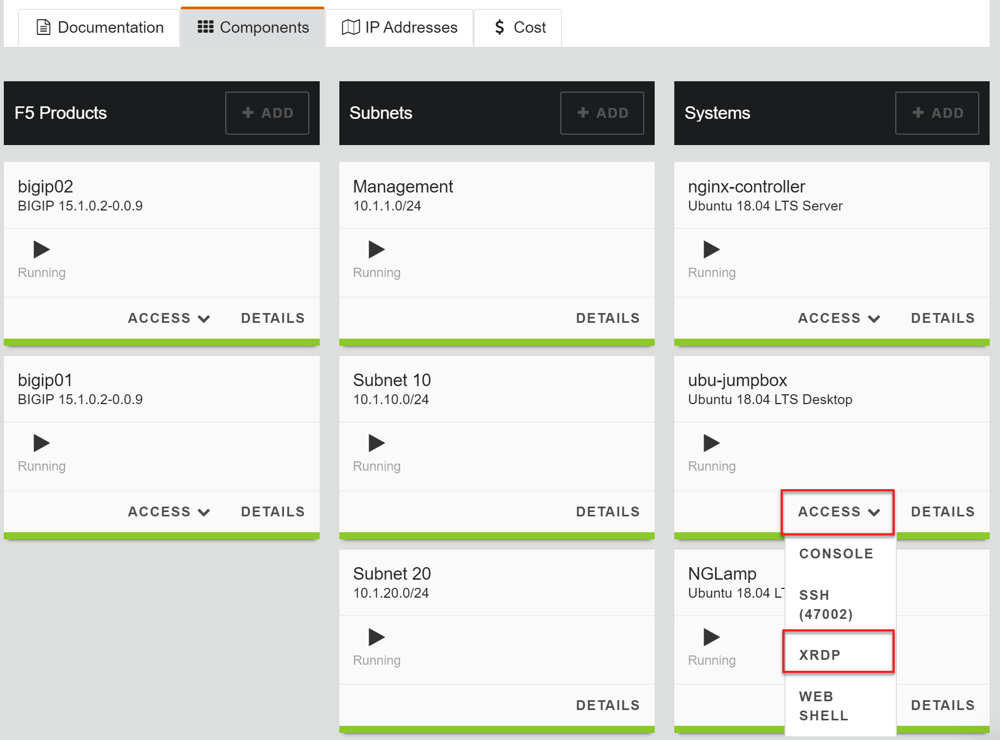
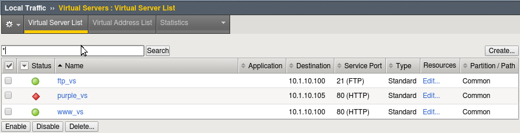

Unofficial - F5 Certification Exam Prep Material > F5 201 - TMOS Administration Labs 08/11/2020 > Lab 1 – Accessing the Lab, Networking and BIG-IP Traffic Flow Source | Edit on
Accessing the Lab Environment¶
Accessing the UDF labs¶
You will be access the labs using the F5 Unified Demo Framework (UDF). Chrome is the preferred browser for access.
- Open your browser, preferably Chrome and navigate to F5 UDF https://udf.f5.com/courses
- Select the Non-F5 Users option and log in using you UDF credentials.
Important
You should retain these credentials, as they will be required to any access future F5 UDF courses you attend in the F5 UDF environment
- You should see the event(s) under Happening now. Find the NGINX 101 Workshop event and click on the Launch link at the far right.
- Click the Join button. Manage SSH Keys should not be required. (change this?)
- At the top you will see Documentation and Deployment. - In the Documentation section you can elect to leave the session, see how long the session will last and other documentation - Click on the Deployment tab. The VM instances will take a minute to provision and will be ready when you have a green arrow.
- To access an instance, click the “Access” link and select the type of access you want from the drop-down menu
- NOTE: To paste into the web shell use ctrl-shift-v
Lab Environment¶
Important
The F5 201 lab guide is written with the assumption that the lab jumpbox will be used as the client for testing and accessing the BIG-IPs. Although you are welcome to use the direct access links provided for configuring and viewing the BIG-IPs.
| Components | ** Mgmt IP ** | Access | Username | Password |
| bigip01 | 10.1.1.4 | GUI | admin | f5UDFrocks! |
| SSH | admin | f5UDFrocks! | ||
| bigip02 | 10.1.1.5 | GUI | admin | f5UDFrocks! |
| SSH | admin | f5UDFrocks! | ||
| ubu-jumpbox | RDP | f5studen | f5UDFrocks! | |
| NGLAMP | 10.1.1.7 | SSH | f5student | f5UDFrocks! |
| 10.1.1.7 | webmin | f5student | f5UDFrocks! |
Accessing the Jumpbox BIG-IP VE System Configuration¶
Go to the Components tab and select the Access drop down menu and select XRDP. Log on with the credentials in the table above.
Access your BIG-IP and verify it is configured properly.
From the jumpbox open a new Web browser from the bottom bar and access https://10.1.1.4. Log into the BIG-IP VE system using the following credentials:
Username: admin
Password: f5UDFrocks
Check the upper left-hand corner and ensure you are on the active device the status should be ONLINE (ACTIVE). Most deployments are active-standby and either device could be the active device.
Go to Local Traffic > Virtual Servers and verify your virtual server states. They should match the image below.
Note
This BIG-IP has been pre-configured and the purple_vs virtual server is down on purpose.
If everything is in order go on to the Networking the BIG-IP lab.